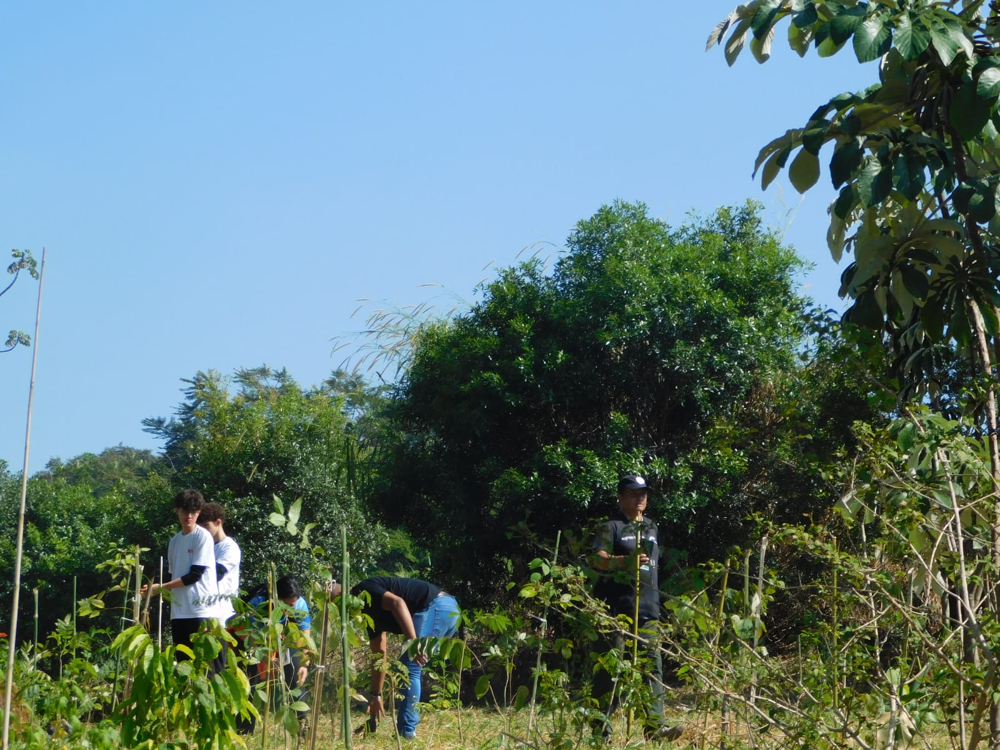
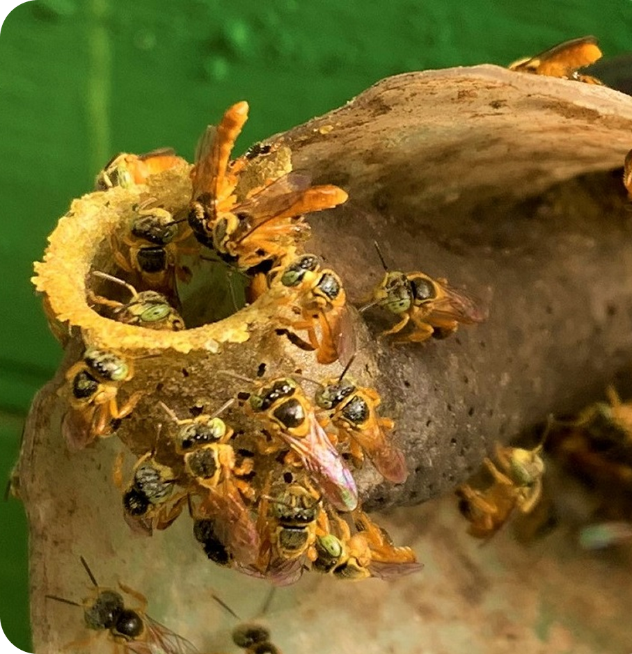
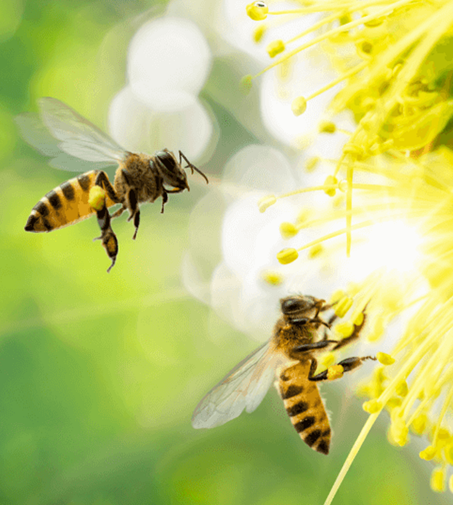

Abelhas nativas
“Ninguém preserva o que não conhece.”
Nosso projeto une educação ambiental, conscientização,
tecnologia,
plantio de árvores nativas e produção de alimentos para valorizar as abelhas sem ferrão e sua
importância para o meio ambiente.
.jpeg)
Sobre o Projeto
Levamos conhecimento sobre as abelhas nativas e sua importância para a biodiversidade, através de oficinas, palestras e atividades práticas como produção de mudas, construção de viveiros e plantio de mais de 600 espécies nativas, contribuindo para áreas verdes e conscientização ambiental.
Usamos o Instagram para divulgar nossas ações no projeto, bem como a ida nas 20 classes para que todos possam fazer parte do processo.
Abelhas Nativas sem Ferrão
As abelhas sem ferrão ou abelhas indígenas per tecem à família Apidae, tribo Meliponini, razão pela qual também são chamadas de meliponíneos. Apesar do nome, essas abelhas possuem ferrão, mas este é atrofiado e não possui função de defesa. O Brasil conta com mais ou menos 250 espécies de abelhas sem ferrão.
Polinização
É o transporte do pólem até a parte feminina da flor. Quando a abelha busca alimento, o pólen gruda nela. Assim, ela leva o pólem para outras flores, polinizando-as. A polinização garante a reprodução das plantas, gerando frutos melhores e mais sementes, essencial para a cadeia alimentar. Abelhas sem ferrão são ótimas polinizadoras em áreas diversas e importantes para a restauração ambiental!
Biodiversidade
Mais de 90% das plantas das florestas tropicais e 73% das plantas cultivadas para para nossa alimentação são polinizadas pelas nossas abelhas sem ferrão, além de produzirem mel, própolis, pólen e cera com propriedades únicas.